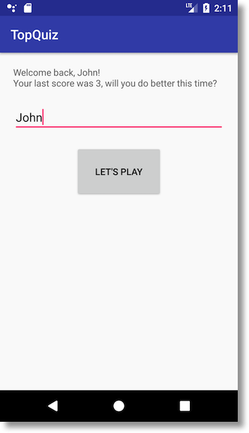
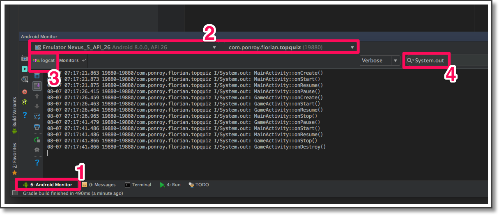

1.Récupérez le score du joueur dans l'activité principale
Dans ce chapitre, nous allons faire communiquer la GameActivity avec la MainActivity, afin de récupérer le score du joueur pour pouvoir plus tard l'afficher sur l'écran d'accueil.
Récupération du résultat d'une activité
Récupérer le résultat d'une activité
Si vous vous rappelez bien, nous avions démarré l'activité GameActivity en utilisant la méthode startActivity(). Si votre mémoire vous fait défaut, je vous invite à relire le code (dans la méthode onClick() du bouton de démarrage de jeu).
Maintenant, la donne a changé : nous souhaitons démarrer GameActivity et attendons de sa part un résultat, qui sera le score de l'utilisateur. Pour ce faire, la méthode à utiliser est startActivityForResult(). Sa signature est la suivante :
public void startActivityForResult(Intent intent, int requestCode)
Le premier paramètre est le même que celui de startActivity(). Le second paramètre est plus intéressant : il permet de préciser un "code de requête", c'est à dire un identifiant lié à cette activité. Pourquoi ? Imaginez que votre activité possède cinq boutons, et que chaque bouton permette de lancer une activité différente. Eh bien cet identifiant vous permettra par la suite de savoir quelle activité vous envoie son résultat. Démarrage d'une activité avec demande de résultat
Commencez tout d'abord par ajouter une variable d'instance pour définir l'identifiant de la GameActivity :
private static final int GAME_ACTIVITY_REQUEST_CODE = 42;
Sa valeur a peu d'importance. Il faut simplement qu'elle soit unique si vous aviez des activités différentes à démarrer. Ensuite, modifiez l'appel de création de la GameActivity en utilisant cette nouvelle méthode :
startActivityForResult(gameActivity, GAME_ACTIVITY_REQUEST_CODE);
Envoi du résultat
Rendez-vous maintenant dans la GameActivity. Vous vous rappelez lorsque nous avions utilisé la méthode finish() pour arrêter l'activité et revenir à l'écran principal ? Oui, c'est exactement ici que nous allons renvoyer le score de l'utilisateur.
Pour ce faire, il est nécessaire de créer un Intent (nous avions déjà utilisé cette classe pour demander le démarrage de la GameActivity depuis la MainActivity). Dans le cas présent, nous allons nous en servir pour lui "attacher" le score de l'utilisateur, afin de pouvoir le renvoyer à la première activité.
Tout d'abord, pour "attacher" une valeur à un Intent, il est nécessaire d'utiliser la méthode putExtra(). Cette méthode possède différentes signatures, selon le type de valeur à attacher. Quelques exemples de signatures :
public Intent putExtra(String name, boolean value);
public Intent putExtra(String name, int value);
public Intent putExtra(String name, String value);
Comme pour le stockage des préférences, il est nécessaire de fournir une "clé", car un Intent peut contenir plusieurs valeurs différentes. Dans notre cas, nous allons définir une variable de classe publique pour stocker le nom de la clé, afin qu'elle puisse être récupérée par la suite par la MainActivity. Ajoutez la variable suivante dans la GameActivity : public static final String BUNDLE_EXTRA_SCORE = "BUNDLE_EXTRA_SCORE";
Maintenant, mettez votre code à jour pour renvoyer le score de l'utilisateur : Intent intent = new Intent();
intent.putExtra(BUNDLE_EXTRA_SCORE, mScore);
setResult(RESULT_OK, intent);
finish(); Quelques explications :
- Ligne 1 : nous créons une instance de la la classe Intent ;
- Ligne 2 : nous attachons le score à l'Intent, avec la clé associée BUNDLE_EXTRA_SCORE. Cette clé sera par la suite utilisée par la MainActivity pour récupérer le score ;
- Ligne 3 : nous précisons au système Android que l'activité s'est correctement terminée, et nous lui indiquons en second paramètre notre Intent (qui contient le score) ;
- Ligne 4 : nous terminons l'activité.
Je sais ce que vous vous dites : cela aurait été quand même plus simple d'appeler finish(score). Eh oui, je suis d'accord avec vous, mais vous n'avez pas le choix : le mécanisme d'Intent est au cœur du système Android, c'est lui qui permet aux activités de communiquer entre elles.
Récupération du résultat
Revenez dans le fichier de la MainActivity. Pour récupérer le résultat renvoyé par une activité, il est nécessaire de surcharger la méthode onActivityResult(). Appuyez sur CTRL + O, tapez les premières lettres de la méthode et appuyez sur la touche Entrée. La méthode suivante est générée :
@Override
protected void onActivityResult(int requestCode, int resultCode, Intent data) {
super.onActivityResult(requestCode, resultCode, data);
}
Avant de récupérer le score, vous devez vous assurer de plusieurs choses :
- Tout d'abord, assurez-vous que le résultat provient de la bonne activité, en vérifiant le paramètre requestCode. Il doit correspondre à la valeur que vous avez précisée plus haut, en l'occurrence BUNDLE_EXTRA_SCORE.
- Ensuite, vérifiez que cette activité s'est correctement terminée, en analysant le paramètre resultCode. Sa valeur doit être RESULT_OK, telle que nous l'avions précisée dans l'appel à setResult().
- Enfin, si tout est correct, vous pouvez récupérer le score. Pour récupérer le score, sachant qu'il a été stocké en tant qu'entier, la méthode à utiliser est getIntExtra()
Le code correspondant est le suivant :
if (GAME_ACTIVITY_REQUEST_CODE == requestCode && RESULT_OK == resultCode) {
// Fetch the score from the Intent
int score = data.getIntExtra(GameActivity.BUNDLE_EXTRA_SCORE, 0);
}
Voilà. Notez la signature de la méthode getIntExtra() : le second paramètre permet de préciser une valeur par défaut au cas où la valeur demandée n'existerait pas.
2. Mémorisez les préférences du joueur
La gestion des préférences
Description
/L'API mise à disposition par Android pour sauvegarder des informations locales à l'application s'appelle SharedPreferences. C'est une couche d'abstraction qui vous facilite la vie : elle récupère les données que vous lui passez et les stocke dans un fichier XML.
L'API offre la possibilité d'utiliser différents fichiers pour stocker les informations. Cela a du sens dans une application importante avec des données très variées. Dans notre cas, nous allons utiliser la version standard : un seul fichier de stockage est géré, et cela automatiquement.
Pour accéder à l'instance de SharedPreferences, il suffit d'appeler la méthode getPreferences() sur l'activité courante, comme ceci :
SharedPreferences preferences = getPreferences(MODE_PRIVATE); Si nous avions souhaité utiliser un autre fichier de stockage, nous aurions utilisé plutôt :
SharedPreferences preferences = getSharedPreferences("nom fichier", MODE_PRIVATE); Le paramètre MODE_PRIVATE permet de préciser que les données du fichier sont accessibles seulement par notre application. Encore heureux ! Eh oui, historiquement il existait d'autres modes qui permettaient à des applications tierces de venir lire et écrire dans votre fichier. C'est scandaleux, n'est-ce pas ? Je suis bien d'accord avec vous ! C'est pourquoi Google a décidé de rendre ces modes obsolètes, pour des raisons évidentes de sécurité. Donc partez du principe que vous utiliserez toujours le mode MODE_PRIVATE.
Écriture
Pour pouvoir modifier les informations stockées dans les SharedPreferences, il est obligatoire d'utiliser l'API SharedPreferences.Editor.
Tout d'abord, une information stockée est toujours associée à une clé, permettant ainsi de récupérer précisément une valeur souhaitée sans avoir à récupérer l'ensemble des données.
Ensuite, il est obligatoire de préciser le type de donnée stockée, en utilisant la méthode correspondante. Par exemple, pour stocker une chaîne de caractères, il faudra utiliser une méthode spécifique appelée putString(). Et pour stocker un entier, il faudra utiliser la méthode putInt().
Enfin, pour valider la modification, il est nécessaire d'appeler la méthode apply().
Par exemple, pour stocker le prénom de l'utilisateur, le code serait donc le suivant :
SharedPreferences preferences = getPreferences(MODE_PRIVATE);
SharedPreferences.Editor editor = preferences.edit();
editor.putString("firstname", mUser.getFirstName());
editor.apply();
Sachant que vous êtes aussi flemmards que moi, vous préférerez probablement utiliser la version courte :
SharedPreferences preferences = getPreferences(MODE_PRIVATE);
preferences.edit().putString("firstname", mUser.getFirstName()).apply();
Je sais que vous êtes très perspicaces et que vous avez noté les deux choses suivantes :
1-La clé utilisée pour stocker le prénom de l'utilisateur est firstname ;
2-Le prénom de l'utilisateur est récupéré du modèle.
De même, il serait préférable de créer une constante pour stocker la chaîne de caractères "firstname". Le code sera plus facilement maintenable et moins sujet aux erreurs de frappe.
Lecture
Comme pour l'écriture, la lecture d'une valeur requiert l'appel à une méthode spécifique suivant le type de donnée à récupérer. Par exemple, pour récupérer une chaîne de caractères, il faudra utiliser getString(), alors qu'un entier sera récupéré en utilisant getInt(). Par exemple, pour récupérer le prénom de l'utilisateur, le code suivant sera utilisé :
String firstname = getPreferences(MODE_PRIVATE).getString("firstname", null);
Mise en Application
Grâce à la section précédente, vous devez être en mesure de stocker et récupérer le prénom de l'utilisateur, tout cela dans la MainActivity.Exercice :
Bon, ce n'est pas juste qu'il n'y ait que moi qui bosse. J'ai un petit exercice pour vous. Je vous propose de mettre à jour le code de la MainActivity de la façon suivante :
- Lorsque l'activité démarre, vérifiez si une partie a déjà eu lieu (indice : si tel est le cas, un prénom et un score doivent avoir été enregistrés dans les préférences ;
- Récupérez ces valeurs et mettez à jour le texte d'accueil, en saluant la personne et en lui rappelant son précédent score ;
- Valorisez également le champ de saisie avec le prénom de la personne, afin d'éviter qu'elle ait à le saisir de nouveau. N'oubliez pas de positionner le curseur à la fin du prénom !
- Pensez également à mettre à jour l'affichage lorsqu'une partie vient de se terminer !
Le résultat doit être le suivant :

3.Améliorez l'expérience utilisateur
nous allons améliorer l'expérience utilisateur, c'est à dire nous assurer que le joueur soit correctement informé des différents événements, qu'il ne se sente pas perdu et qu'il soit heureux d'utiliser votre application.
Amélioration de l'expérience utilisateur
Avec l'implémentation que nous venons de mettre en place, vous devez constater la chose suivante : dès que le joueur sélectionne une réponse, la question suivante se met systématiquement à jour alors que le message Toast n'a même pas eu le temps de disparaitre.
Dans l'idéal, il faudrait attendre que le message Toast disparaisse pour ensuite afficher la question suivante. Et entre temps, ce serait encore mieux d'empêcher l'utilisateur d'appuyer sur un autre bouton.
Cette section introduit des concepts qui peuvent vous paraître obscurs pour l'instant. Si vous ne les comprenez pas tout de suite, aucun problème. Vous vous familiariserez avec eux au fur et à mesure des prochains cours.
Temporisation
Nous allons utiliser ici une méthode d'attente très simple : nous allons demander au système de patienter deux secondes avant d'exécuter notre bout de code. Cela permettra d'attendre la fin de l'affichage du message Toast. Voici le code :
new Handler().postDelayed(new Runnable() {
@Override
public void run() {
// If this is the last question, ends the game.
// Else, display the next question.
}
}, 2000); // LENGTH_SHORT is usually 2 second long La classe Handler permet de communiquer avec le système pour lui demander d'exécuter une action. La méthode associée est postDelayed(). Le premier paramètre est un objet de type Runnable, c'est à dire l'action que vous souhaitez accomplir. L'action est déterminée dans la méthode run().
Le second paramètre est la durée d'attente, en millisecondes. Vous pouvez adapter la durée d'attente suivant la durée d'affichage du Toast que vous avez choisie (LENGTH_SHORT = 2s et LENGTH_LONG = 3.5s).
De la même manière, je vous laisse réfléchir un peu et développer vous-même ce que vous allez mettre dans cette méthode run().
Le code ci-dessus contient une fuite mémoire. Si vous souhaitez en savoir plus, je vous invite à lire cet article. Pour le besoin du cours, nous pouvons vivre avec, je vous promets que votre téléphone ne va pas dégouliner. Nous verrons dans un prochain cours comment détecter et corriger ces éventuelles fuites. Merci Super Mario.
Désactivation des clics
Dès que l'utilisateur a sélectionné une réponse et que le message Toast s'affiche, il faut l'empêcher de cliquer de nouveau sur une autre réponse, le temps d'afficher la question suivante.
Pour ce faire, nous allons utiliser la méthode dispatchTouchEvent(). C'est une méthode de la classe Activity, qui est appelée à chaque fois qu'un utilisateur touche l'écran. Elle est un endroit idéal pour ignorer temporairement les clics de l'utilisateur. Je vous invite à surcharger cette méthode, en utilisant le raccourci CTRL + O (O pour Override), en tapant les premières lettres pour trouver la méthode, puis en appuyant sur la touche Entrée. La signature de la méthode est la suivante :
public boolean dispatchTouchEvent(MotionEvent ev); Le booléen renvoyé permet de dire au système si l'action de l'utilisateur doit être prise en compte ou non. Si l'action doit être ignorée, renvoyez false. Sinon, appelez la méthode de la classe mère. Par exemple, l'implémentation pourrait être :
return mEnableTouchEvents && super.dispatchTouchEvent(ev);
Il vous suffit simplement de gérer un attribut de classe (nommé mEnableTouchEvents), et de le valoriser à true lorsque les actions doivent être prises en compte, ou à false si elles doivent être ignorées.
4. Comprenez le cycle de vie d'une activité
Nous allons étudier dans ce cours comment fonctionne le cycle de vie d'une activité. C'est un sujet très important que tout développeur Android doit savoir maîtriser. Non, je ne vous mets pas la pression. Et de toute façon, comme le disait Desproges : la pression, je préfère la boire plutôt que la subir.
Description
Lorsque votre réveil sonne le matin, vous passez de l'état endormi à l'état réveillé. Ensuite, lorsque vous vous levez puis vous préparez à aller travailler, vous passez de l'état réveillé à opérationnel. Tout au long de la journée, vous passez d'un état à l'autre.
Sous Android, une activité passe également par différents états. Entre chaque état, le système appelle certaines méthodes bien spécifiques, dans un ordre déterministe. Vous connaissez déjà une de ces méthodes : onCreate().
Voici les différents états dans lesquels une activité peut se trouver :

Par défaut, la méthode onCreate() est automatiquement surchargée lorsque vous créez une nouvelle activité. Mais comme vous pouvez le voir sur le diagramme ci-dessus, il en existe d'autres, que nous allons découvrir maintenant.
La méthode onCreate()
Cette méthode, que vous connaissez déjà, est appelée lorsque votre activité est créée par le système et qu'elle entre dans l'état Created.
Généralement, les opérations effectuées dans cette méthode servent à mettre en place l'interface graphique, à initialiser les variables, à configurer les listeners ou à se connecter au modèle.
Vous aurez noté que cette méthode prend en paramètre une variable savedInstanceState de type Bundle. Cette variable contient le dernier état sauvegardé de l'activité. Ne vous inquiétez pas si vous ne comprenez pas, vous en saurez plus un peu plus bas !
À ce stade, l'activité est créée, mais l'utilisateur ne la voit pas encore et ne peut pas interagir avec.
La méthode onStart()
Cette méthode est appelée par le système lorsque l'activité entre dans l'état Started. L'interface graphique devient visible à l'utilisateur, mais il ne peut pas encore interagir avec les différents éléments.
La méthode onResume()
Cette méthode est appelée lorsque l'activité entre dans l'état Resumed. L'activité devient entièrement opérationnelle. L'utilisateur peut utiliser l'application et cliquer sur les différents éléments graphiques.
L'application reste dans cet état tant qu'il n'y a pas d'interruption, comme par exemple, la réception d'un appel téléphonique, le démarrage d'une nouvelle activité ou l'affichage d'une boîte de dialogue.
La méthode onPause()
Cette méthode est appelée lorsque l'activité entre dans l'état Paused. Cette méthode est le pendant de la méthode onResume() : tout ce qui est initié dans onResume() doit être mis en pause dans cette méthode. Par exemple, une animation présentée à l'utilisateur est démarrée dans onResume() puis stoppée dans onPause(). Les traitements effectués dans cette méthode doivent être les plus courts possibles.
La méthode onStop()
Cette méthode est appelée lorsque l'activité entre dans l'état Stopped. Par exemple, lorsqu'une nouvelle activité est démarrée, l'activité appelante va se retrouver dans cet état. Elle n'est donc plus visible à l'utilisateur. Les traitements liés à la mise à jour de l'interface graphique peuvent être arrêtés. Les traitements effectués dans cette méthode peuvent être plus importants (comme sauvegarder certaines valeurs dans les SharedPreferences par exemple).
La méthode onDestroy()
Cette méthode est appelée lorsque l'activité est arrêtée. Par exemple, ce peut être après avoir appelée la méthode finish(), ou si le système décide d'arrêter l'activité pour libérer de la mémoire.
Mise en Application
Pour bien comprendre l'enchaînement des méthodes, je vous invite à toutes les surcharger (sauf onCreate() qui l'est déjà) dans vos deux activités, et d'afficher leur appel dans la console. Pour rappel, l'affichage d'une trace en Java s'effectue de la sorte (nous verrons dans le cours suivant comment utiliser le système de trace spécifique à Android) :
System.out.println("MainActivity :: onStart()"); Lancer l'application, appuyez sur le bouton pour démarrer une nouvelle partie, jouez-la jusqu'à la fin et attendez de revenir sur l'écran principal. Vous devriez obtenir :

Pour avoir un affichage similaire, veillez à :
- Sélectionner l'onglet Android Monitor en bas à gauche d'Android Studio ;
- Sélectionner le nom de l'émulateur si vous testez sur l'émulateur, ou le nom de votre équipement si vous testez sur un téléphone ou une tablette, ainsi que le nom du processus ;
- Sélectionner l'onglet logcat ;
- Filtrer l'affichage des traces en tapant System.out dans la zone de recherche. Cela vous évitera d'être pollué par l'ensemble des traces générées par le système.
Du côté de MainActivity, nous avons :
- onCreate() / onStart() / onResume() : l'activité est démarrée ;
- onPause() : l'activité est en pause, car l'activité GameActivity va être démarrée ;
- onStop() : l'activité est stoppée, car c'est l'activité GameActivity qui est au premier plan ;
- onStart() / onResume() : l'activité reprend, car l'activité GameActivity est terminée.
Du côté de GameActivity, nous avons :
- onCreate() / onStart() / onResume() : l'activité est démarrée ;
- onPause() / onStop() / onDestroy() : l'activité se termine puis est détruite.
Ci-dessous le schéma extrait de la page Google qui synthétise ce que nous venons de voir :

5. Tournez votre équipement : que se passe-t-il ?
Introduction
Lancez l'application, saisissez votre prénom et appuyez sur le bouton de démarrage de jeu. Observez la question posée. Tournez votre téléphone pour changer l'orientation (si vous êtes en mode portrait, passez en mode paysage, et vice-versa). Répétez l'opération plusieurs fois. Que constatez-vous ? La question posée est presque à chaque fois différente ! Pourquoi ? C'est ce que nous allons découvrir dans ce chapitre.
Si la question affichée et toujours la même, c'est que votre implémentation diffère légèrement de celle de ce cours. Vous n'avez pas dû mélanger les questions lorsque vous les ajoutez à la banque de questions ! Aucun souci, récupérez si nécessaire mon implémentation sur GitHub ou mettez à jour votre code pour qu'il soit homogène.
Le changement d'orientation
Nous sommes tous libres de changer d'orientation. Regardez, avant j'étais agent secret, maintenant je suis votre professeur Android préféré. Ah non, je m'égare, ce n'est pas de ce changement d'orientation dont je voulais parler !
Vous l'aviez compris, je voulais plutôt parler du changement d'orientation de votre équipement. Je vais être très vilain et vous ôter tout suspens : lorsque le système Android effectue une rotation de l'écran, il détruit votre activité et la crée de nouveau. Oui je suis d'accord, c'est inadmissible !
Sauvegarde et restauration des données
Heureusement, Android ne nous laisse pas seuls sur le bord de la route avec notre problème. Avant d'arrêter une activité, Android appelle la méthode suivante sur l'instance en cours :
public void onSaveInstanceState(Bundle savedInstanceState); Le paramètre savedInstanceState (ou parfois nommée outState) vous rappelle quelque chose ? Exactement, c'est la même information qui est passée en paramètre de la méthode onCreate(). En d'autres termes, dans la méthode onSaveInstanceState(), nous allons ajouter au Bundle toutes les informations pertinentes nous permettant de revenir dans l'état dans lequel nous nous trouvions avant que l'activité soit redémarrée. Les deux paramètres que nous allons sauvegarder sont le score de l'utilisateur et l'indice de la question à laquelle il est rendu.
"Par mesure de simplicité, nous n'allons pas sauvegarder les questions déjà posées pour éviter d'afficher les mêmes, car c'est un sujet assez complexe. De ce fait, dans le cadre de ce cours, il faut accepter de retomber éventuellement sur les mêmes questions. Si vous êtes très curieux (et très joueurs), vous pouvez essayer de corriger ce problème de plusieurs façons : Vous sauvegardez le modèle pour le récupérer dans le même état. Pour ce faire, il faut que le modèle implémente l'interface Parcelable ; Vous mettez à jour QuestionBank pour pouvoir commencer à la question n. Mais cela vous oblige à désactiver le mélange automatique des questions, afin de conserver un ordre déterministe".
Le principe de sauvegarde dans le Bundle est identique aux SharedPreferences ou aux Intent : vous devez préciser une clé, et utiliser la méthode correspondant au type de la donnée à sauvegarder. Sachant que nous souhaitons sauvegarder deux entiers, nous allons utiliser la méthode putInt().
Afin de récupérer les données plus facilement, créez les deux clés sous forme de constantes dans la classe GameActivity :
public static final String BUNDLE_STATE_SCORE = "currentScore";
public static final String BUNDLE_STATE_QUESTION = "currentQuestion";
Ensuite, sauvegardez la valeur du score et de l'index de questions, et surtout n'oubliez pas d'appeler l'implémentation de la classe mère :
@Override
protected void onSaveInstanceState(Bundle outState) {
outState.putInt(BUNDLE_STATE_SCORE, mScore);
outState.putInt(BUNDLE_STATE_QUESTION, mNumberOfQuestions);
super.onSaveInstanceState(outState);
} Maintenant, il vous suffit de récupérer ces valeurs dans la méthode onCreate(), en vous assurant que le paramètre Bundle est bien valorisé (il peut valoir null, notamment lorsque l'activité est démarrée pour la première fois) :
if (savedInstanceState != null) {
mScore = savedInstanceState.getInt(BUNDLE_STATE_SCORE);
mNumberOfQuestions = savedInstanceState.getInt(BUNDLE_STATE_QUESTION);
} else {
mScore = 0;
mNumberOfQuestions = 4;
} Il est également possible d'utiliser le pendant de la méthode onSaveInstanceState(), qui est onRestoreInstanceState(). Je vous laisse découvrir comment l'implémenter sur cette page.
Conclusion
Nous y sommes, ce chapitre conclut notre premier cours. Vous avez une application au top, j'espère que vous serez fiers de la montrer à votre entourage !!